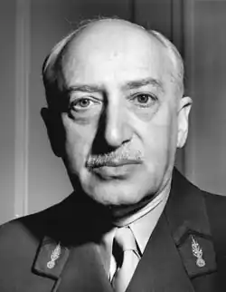
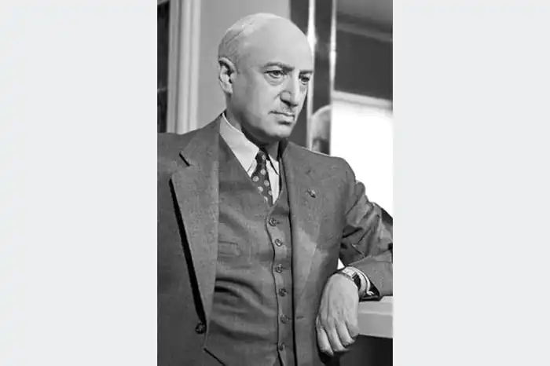

МОРУА, Андре (Maurois, Andre; автонім: Герцог, Еміль — 26.07.1885, Ель-беф — 09.10. 1967, Париж) — французький письменник. Народився поблизу Руана в сім'ї промисловця. Закінчив Руанський ліцей ім. Корнеля. Великий вплив справив на нього викладач філософії Е. Шартьє, котрий зажив усеєвропейської слави під іменем Ален. Після закінчення ліцею майбутній письменник став одним із керівників фабрики батька. Брав участь у Першій світовій війні, був перекладачем при Британському експедиційному корпусі, що дало матеріал для першого роману — "Мовчання полковника Брембла" ("Les silences du colonel Bramble", 1918). Англійська тема була продовжена у низці художніх і публіцистичних творів. У 20-30-х pp. він створив трилогію з життя англійських романтиків: "Аріель, або Життя Шеллі" ("Ariel, ou la Vie de Shelley", 1923), "Життя Дізраелі" ("La Vie de Disraeli", 1927) та "Байрон" ("Byron", 1930), котра згодом була видана під спільною назвою "Романтична Англія"; випустив кілька романів: "Бернар Кене"("Bernard Quesnay", 1926), "Мінливість кохання"("Climats", 1928), "Родинне коло" ("Le Cercle de famille", 1932) та ін.
Коли розпочалася Друга світова війна, 54-річ-ний письменник записався добровольцем у діючу армію. Після поразки Франції він опинився у США, де написав низку історичних та публіцистичних матеріалів. Після повернення на батьківщину видав збірки новел, книгу "У пошуках Марселя Пруста" ("A la recherche de Marcel Proust", 1949), присвятив три книги французьким романтикам — "Лелія, або Життя Жорж Санд" ("Lelia, ou la Vie de George Sand", 1952), "Олімпіо, або Життя Віктора Гюго" (1955), "Три Дюма" ("Les Trois Dumas", 1957). У рік 80-ліття Моруа написав останню біографічну працю "Прометей, або Життя Бальзака" ("Promethee, ou la Vie de Balzac", 1965).
Творчість Моруа воістину величезна — 200 книг, понад тисячу статей. Його перу належать романи та новели, критичні статті та філософські есе, літературні мемуари й історичні праці. Але передусім Моруа — майстер біографічного жанру. Драматичні колізії життя Моруа значною мірою дикту-вала історія. Але, усвідомлюючи страхітливе обличчя свого століття, письменник не був схильний знімати відповідальність з людини. Сам він не боявся приймати і приймав кодекс нетрадиційного рішення, повертаючись на фабрику, коли безумно кортіло у Париж, одягаючи мундир офіцера в непризивному віці. І цю ж властивість він підкреслював у своїх героях. Його приваблювали письменники-романтики та люди романтичної долі. Світогляд самого Моруа вирізнявся послідовністю та цілісністю. За своїми поглядами він близький до просвітників XVIII ст. Письменник любив повторювати: "Я не чистий матеріаліст і не чистий ідеаліст", що цілком у дусі Просвітництва. На його сприйняття філософських поглядів і систем величезний вплив справив Ален, Особливо близька йому думка вчителя про те, що "людина та Бог зливаються у вільній людині". У героях його книг, особливо біографічних, читач бачить саме таку людину — людські достоїнства та слабкості зливаються у ній з божественним призначенням. Письменник, які б погляди він не сповідував, до якої б школи не належав, повинен, на думку Моруа, дотримуватися лише трьох заповідей: говорити правду, прагнути до прекрасного, захищати свободу, адже без свободи немає правди. Моруа приваблює певний тип — люди, які без примусу вибирають добро. Важливою для розуміння естетичних поглядів письменника є думка про митця як про виразника ідей рівності людей і народів, національної терпимості. Невипадково героями романів Моруа були люди різних національностей, а об'єктом його дослідження — творчість не лише французьких, але й англійських, американських, російських письменників. У творчій спадщині Моруа біографії посідають особливе місце. Про їхній успіх свідчать величезні наклади, численні нагороди, яких удостоєний письменник. Техніці цього жанру він міг вчитися ще у Плутарха, але були, звісно, й більш ближчі вчителі — адже особливого поширення біографічний жанр набув у XX ст. Це пов'язано, вочевидь, з пильною увагою до особистості. Критики й літературознавці, кажучи про біографічні книги Моруа, оперують різними поняттями: художня біографія, біографічний роман, романізована і навіть белетризована біографія. Останнє визначення письменник рішуче заперечував, стверджуючи, що у своїх працях він спирається виключно на факти; документ стає у нього необхідною, органічною частиною книги. "Романтичний" первень у творах Моруа "полягає в неминучому розриві між тим проминальним образом світу і людей, що виникає в кожного підлітка, і тією більш точною картиною, котру звільна розгортає перед ним час". У центрі біографічних романів Моруа — творча особистість, людина дії, трудівник, бунтар. Песимістичній зневірі в людині він протиставляє віру в індивідуума, якого створюють не лише зовнішні обставини, але й він сам. Такими постають в нього П.Б. Шеллі та Дж.Н.Ґ. Байрон, Б. Дізраелі та В. Гюґо, Жорж Санд і Дюма. Його біографічні дослідження виникли на зламі історичного дослідження, літературознавчого аналізу та психологічного роману. На думку письменника, біографія в естетичному плані має певні переваги над романом: "Коли ми читаємо біографію знаменитої людини, ми наперед знаємо головні перипетії та фінал подій... Ми немов прогулюємося знайомою місциною, оживляючи свої спогади та доповнюючи їх. Духовний спокій, з яким ми здійснюємо цю прогулянку, позбавлену несподіванок, сприяє естетичній установці". Моруа цікавить передусім духовний розвиток особистості, історія виступає тут лише як тло в тій мірі, в якій вона необхідна для розуміння цього розвитку. Йому цікаво прослідкувати, як поступово формується характер у зіткненні з людьми та подіями. Письменнику важливо показати романтичну особистість, яка обирає свободу. Він знає смак читача, його зацікавленість інтимним життям великих. Задля справедливості слід сказати, що Моруа цією небезпекою нехтує, а іноді умисне пише про це з метою збільшення популярності. Моруа хотів показати велику людину не лише у величі, але й в слабкості. Письменник може розгорнути відомі біографії як сюжет, ось чому вони читаються легко, як роман. Час показав, що інтерес видавців і читачів до оповідей Моруа не слабне, що, напевне, пов'язано, окрім іншого, з вічними питаннями: яка роль особистості в історії? як співвідносяться герой і юрба, особистість і натовп? хто відповідальний за долі людей і народів — партії і класи чи лідери-одинаки? чи існує реальна можливість здобути уроки з історії? чи можна на прикладі великих людей вчити нові покоління бути мудрішими, терпимішими, людянішими? Навряд чи книги Моруа дають відповіді на всі питання, але написані блискучим пером метра вони вже впродовж десятиліть живуть своїм життям в літературі, ставши її невід'ємною частиною. В Україні окремі твори Моруа переклали О. Іваненко, Л. і П. Воробйови, І. Овруцька, Ю. Калиниченко, Є. Кравець, О. Леонтович, Ю. Мацкевич. В. Пронін